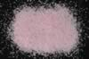

|
|
(For further information on spectroscopy, see:
http://speclab.cr.usgs.gov)
TITLE: Rhodonite HS325 DESCRIPT
DOCUMENTATION_FORMAT: MINERAL
SAMPLE_ID: HS325
MINERAL_TYPE: Inosilicate
MINERAL: Rhodonite
FORMULA: MnSiO3
FORMULA_HTML: MnSiO3
COLLECTION_LOCALITY: Colorado
ORIGINAL_DONOR: Hunt and Salisbury Collection
CURRENT_SAMPLE_LOCATION: USGS Denver Spectroscopy Laboratory
ULTIMATE_SAMPLE_LOCATION: USGS Denver Spectroscopy Laboratory
SAMPLE_DESCRIPTION:
This sample contains very small amounts of magnetite, pyrolusite and calcite. The visible spectrum is dominated by features typical of Mn2+ transitions, displaying bands at 0.35 µ, 0.37 µ, 0.42 µ, and 0.55 µ, resulting in the characteristic pink color of this mineral. The strong broad band near 1.04 µ and 1.9 µ features are typical of molecular water, probably in fluid inclusions.
Hunt, G.R., J.W. Salisbury, and C.J. Lenhoff, 1973, Visible and near-infrared spectra of minerals and rocks: VI. Additional silicates. Modern Geology, v. 4, p. 85-106.
IMAGE_OF_SAMPLE:

END_SAMPLE_DESCRIPTION.
XRD_ANALYSIS:
40 kV - 30 mA, 7.3-9.5 keV
File: rhod325.mdi
References: Huebner's reference patterns; PDF2 #29-0985
Found: Pyroxmangite
Comments: Peaks are symmetric but not strong; alpha1-alpha2 are not resolved. The
pattern has a high background caused by X-ray fluorescence (Mn- or Fe-rich composition is
probable). HS-325 is very similar to Huebner's reference patterns for synthetic
pyroxmangite of MnSiO3 composition (runs Hy-67 and run-130) and unlike that of rhodonite
(run49; see Heubner, 1986). Profile based search-match returns pyroxmangite (PDF2
#29-0985) There are weak, very sharp reflections at 7.2 and 1.912 Angstroms but no
mineral in the PDF2 database has two strong reflections at these positions.
END_XRD_ANALYSIS.
COMPOSITIONAL_ANALYSIS_TYPE: None # XRF, EM(WDS), ICP(Trace), WChem
COMPOSITION_TRACE:
COMPOSITION_DISCUSSION:
END_COMPOSITION_DISCUSSION.
MICROSCOPIC_EXAMINATION:
END_MICROSCOPIC_EXAMINATION.
SPECTROSCOPIC_DISCUSSION:
END_SPECTROSCOPIC_DISCUSSION.
SPECTRAL_PURITY: 1c2c3b4_ # 1= 0.2-3, 2= 1.5-6, 3= 6-25, 4= 20-150 microns
| LIB_SPECTRA_HED: | where | Wave Range | Av_Rs_Pwr | Comment |
|---|---|---|---|---|
| LIB_SPECTRA: | splib04a r 4208 | 0.2-3.0µm | 200 | g.s.= |
| LIB_SPECTRA: | splib05a r 5914 | 0.2-3.0µm | 200 | g.s.= |
| LIB_SPECTRA: | splib06a r 19332 | g.s.= | ||
| LIB_SPECTRA: | splib06a r 19344 | g.s.= |
{kind=link}